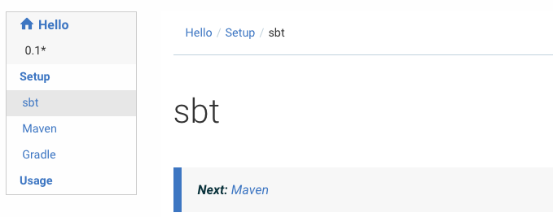
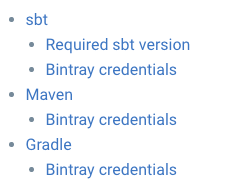

Organizing pages
The first header in a markdown page will become the title of this page, even if it’s a smaller header than the others.
You can organize the page tree by including an @@@ index container inside of a page to declare which pages are child pages of this page.
@@@index container
@@@index is used to list child pages or sections from a page. For example, your main index.md could contain something like this:
@@@ index
* [Setup](setup/index.md)
* [Usage](usage/index.md)
@@@
Inside setup/index.md can list its own child pages as follows:
@@@ index
* [sbt](sbt.md)
* [Maven](maven.md)
* [Gradle](gradle.md)
@@@
Paradox will walk through these indices and create a hierarchical navigation sidebar:

Similar to @ref, the source document on Github will link correctly the other sources.
@@toc block
The “generic” theme already renders a hierarchical navigation sidebar, but let’s say you would like to render a more detailed table of contents for a section overview page.
The @@toc block is used to include a table of content with arbitrary depth.
@@toc { depth=2 }
This will render the page names (first header), and the second headers.
